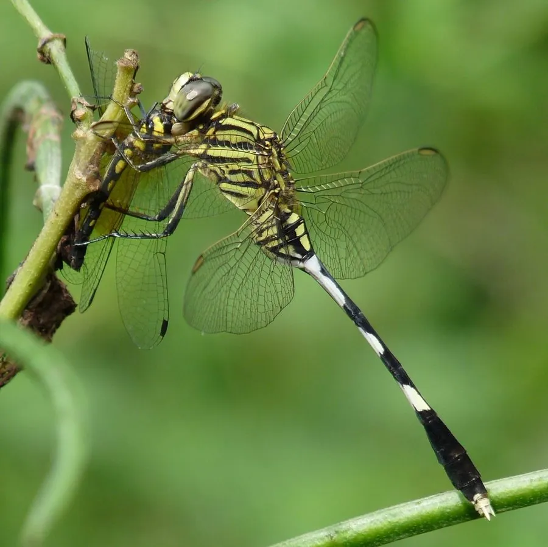

昆虫 · 动物界
狭腹灰蜻 Orthetrum sabina

腹部特别细长的蜻蜓，体色黄绿与黑色相间，常在水边草地和灌丛活动，广泛分布于旧大陆热带和亚热带。
- 分类
- 门节肢动物门纲昆虫纲目蜻蜓目科蜻科属灰蜻属
- 栖息环境
- 池塘、水沟、水田和湿地边缘，常在水边草地活动
- 地理分布
- 旧大陆热带和亚热带，包括中国南方、东南亚和非洲
- 保护级别
- 暂无评估
物种志
狭腹灰蜻成虫体长约 4–5 cm，腹部非常细长，是蜻科中腹部最细的种类之一；体色黄绿色至橄榄绿色，腹部各节有黑色环纹，翅透明，翅基有黑褐色斑。雌雄体色相近，雌虫腹部略粗。
它生活在池塘、水沟、水田和湿地边缘，成虫常在水边草地、灌丛和地面上活动，也常远离水域到开阔地捕食蚊蝇等小飞虫。雌虫点水产卵，幼虫生活在浅水中，捕食水生小动物。狭腹灰蜻广泛分布于中国南方、东南亚、南亚、非洲和澳大利亚等旧大陆热带和亚热带地区，是湿地和农田附近常见的蜻蜓，对水体环境变化较为敏感，可作为湿地生态的观察对象。
形态与习性
- 食性捕食蚊蝇等小飞虫；幼虫捕食水生小动物
- 体长约 4–5 cm
- 识别腹部特别细长，黄绿色带黑色环纹
- 习性常在水边草地和灌丛活动，雌虫点水产卵
- 分布旧大陆热带和亚热带地区
趣味知识
- 狭腹灰蜻的腹部又细又长，是蜻蜓里的细腰美人。
- 它常停在水边的草叶上，也会飞到开阔地捕食。
- 这种蜻蜓分布很广，从中国南方一直到非洲都能见到。